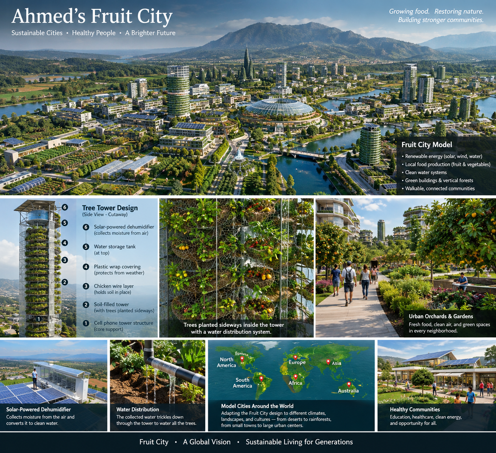
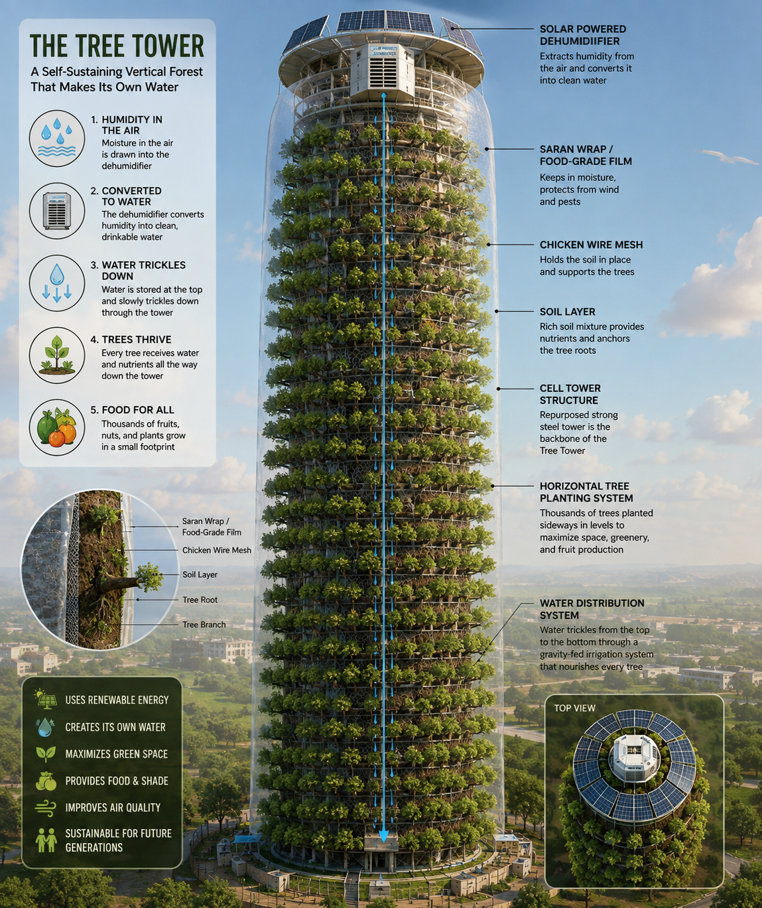
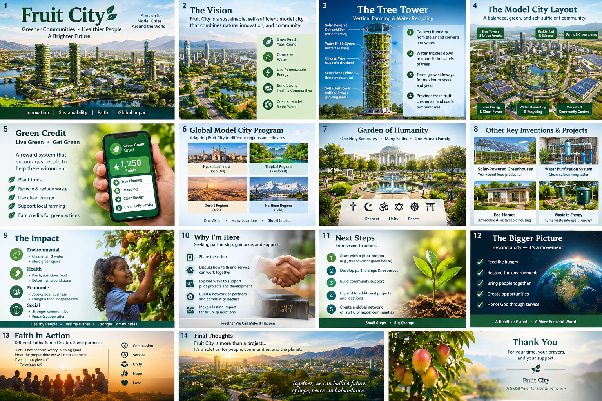

A New Model for Cities
Vertical tower cities housing over one million units per structure — designed so that billions of people can live on this planet without destroying the natural world around them.
fruitcityworldwide.org
A revolutionary model for sustainable urban living — ethical, moral, and lawful. From and for the people.
The model city, the Tree Tower, and the program at a glance. Tap any image to view it full size.

Ahmed's Fruit City — the model city and Tree Tower design

The Tree Tower — a self-sustaining vertical forest

Fruit City presentation — all fifteen slides
Fruit City is a model generator for the first state-of-the-art eco-friendly town tower — a revolutionary approach to sustainable urban living that is ethical, moral, and lawful; from and for the people.
Vertical tower cities housing over one million units per structure — designed so that billions of people can live on this planet without destroying the natural world around them.
Built on a foundation of faith and scientific principles, Fruit City offers a sound solution to global warming — reimagining how cities are designed before it is too late.
The first nonprofit with 24/7 live broadcasting and fully open budget transparency. Every idea is copyrighted but freely given to humanity — not for individual profit.
Since the 1970s, scientists have warned that our current carbon footprint could lead to the extinction of 90% of mammalian and aquatic life within 120–150 years.
of old-growth forests in North America have been destroyed. Trees that were 2,000–3,000 years old — gone.
of human time is spent exploring and connecting with nature. We have become separated from the living world.
of mammalian and aquatic life at risk of extinction if we stay on our current path.
The Time Is Now. With the current trajectory toward a climate crisis, this may be our last chance to implement sustainable solutions on a global scale. Fruit City is not a distant dream — it is a practical, buildable response.
Every program, technology, and innovation within Fruit City serves one of three core goals.
Individual 1,400–1,500 sq ft soundproof, fireproof living spaces with indoor gardens, spring water, and views overlooking bird sanctuaries — inside a 400–500 floor vertical city.
The Living ModelTree Towers producing 1,000–2,000 times more trees in the same space. Solar-powered water collection. Organic fertilizer 6–10 times more powerful than commercial products. Food that is 2–4x more nutritious.
Food InnovationRelease all zoo animals. Breed endangered species. Grow every plant and herb. Rebuild forests. Clean oceans with black mica. Plant enough tree towers to rebuild the atmosphere to prehistoric strength.
Conservation PlanInventor, Researcher & Natural Conservationist
The entire Fruit City vision began with one question Ahmed Syed has spent a lifetime trying to answer:
How can billions of people live on this planet while preserving biodiversity, eliminating poverty, and protecting every remaining natural habitat?
Fruit City is that answer — a model generator, a living blueprint, and an open invitation for all of humanity to build it together.
May we move forward to make this world into the Heaven it once was.
Save the planet from war, famine, and destruction. Create room for unlimited human population. Restore Earth to Garden of Eden conditions. The work starts with every person who chooses to be part of it.